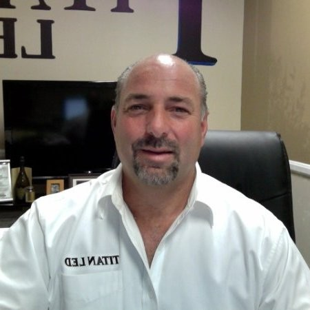

「照明は単なる消耗品ではなく、重要なシステムである」 Lighting is not a commodity—it is a critical system.
Titan LEDは、商業用照明業界が顧客を失望させているという明確な気づきから生まれました。創業者は、海外メーカーが一貫性のない製品を出荷し、代理店が性能やサポートについて空虚な約束をしているのを目の当たりにしました。2010年、私たちは設計、製造、顧客サポートを一つに統合し、真に信頼できる照明ソリューションを生み出すという抜本的に異なるアプローチでTitan LEDを設立しました。 Titan LED emerged from a clear realization: the commercial lighting industry was failing its customers. Our founders saw manufacturers shipping inconsistent products from overseas while distributors made empty promises about performance and support. In 2010, we established Titan LED with a fundamentally different approach—bringing engineering, manufacturing, and customer support under one roof to create truly reliable lighting solutions.
私たちを際立たせているのは、問題解決のアプローチです。標準的な照明製品が特殊な要件を満たせない場合、私たちはカスタマイズされたソリューションを設計します。私たちの革新的なプロセスは、お客様の課題を従来の代替品を凌駕する独自技術や製品ラインへと変えます。品質、コミュニケーション、責任に対するコミットメントに裏打ちされたこのアプローチは、お客様の照明に対する見方を変えました。照明は単なる消耗品ではなく、精密な設計と信頼性の高いパフォーマンスを必要とする重要なシステムなのです。 What sets us apart is our problem-solving mindset. When standard lighting products fail to meet specialized requirements, we engineer custom solutions. Our responsive innovation process transforms customer challenges into proprietary technologies and product lines that outperform conventional alternatives. This approach, backed by our commitments to quality, communication, and accountability, has changed how our customers view lighting—not as a commodity, but as a critical system that demands precision engineering and reliable performance.
過酷な環境を耐え抜く強靭さ Engineered for Extreme Resilience
Titan LEDの創業者でありCEOのBrian Hennessy自らが、自社製品の圧倒的な耐久性を実証。物理的な衝撃が想定される過酷な現場においても破損しない、米国製ポリカーボネートチューブの驚異的な強度をご覧ください。 Watch Titan LED CEO Brian Hennessy personally demonstrate the extreme durability of our commercial tube lights. Built with shatterproof polycarbonate, these units are designed to withstand massive physical impact without failure.

Titan LEDが選ばれる3つの理由 3 Pillars of the Titan Advantage
Made in USA Made in USA
設計から組み立てまでを米国内拠点に集約。サプライチェーンのリスクを低減し、軍事・半導体産業が求める厳格な品質基準をクリアしています。 End-to-end engineering and assembly inside the US eliminates global supply chain risks and ensures strict compliance for military and fab operations.
15.5万時間の稼働寿命 155,000 Hour Life
一般的なLEDが5万時間で限界を迎える中、独自の熱源分離型設計により従来の約3倍の耐用年数を実現。高所の交換メンテナンスを激減させます。 Our external driver thermal-separation design yields almost 3x the life of standard LEDs, practically eliminating expensive high-bay maintenance.
10年包括保証 10-Year Warranty
耐久性への絶対的な自信から、業界最長クラスの10年間メーカー保証を標準付帯。Smart Linkの日本国内サポートでRMA（交換プログラム）も迅速です。 We back our confidence with a standard 10-year factory warranty. Supported directly inside Japan by Smart Link for rapid RMA processing.
製造業の未来を照らすチーム The Minds Illuminating Industry
2010年の設立以来、米国製照明の復権と産業用LEDの限界突破を目指し、業界のトップタレントが集結しています。 Since 2010, top talent has united to revive USA manufacturing and push the boundaries of industrial LED capabilities.

Brian Hennessy
Founder & CEO海外製の大量生産による品質のバラツキを危惧し、2010年にTitan LEDを設立。エンジニアリングと顧客サポートの全てをアメリカ国内に戻すという決断が、今日の圧倒的な製品信頼性の基盤を築きました。 Recognizing the fatal flaws of cheap offshore imports, Brian founded Titan in 2010. His pivot to bring engineering and support back to the US established Titan's foundation of absolute product reliability.
Titan R&D Team
Phoenix Engineering Unitシリコンバレーや航空宇宙産業のノウハウを持つエンジニアチーム。特許取得済みの「熱源分離構造」や、特定の紫外線を遮断するスペクトル・セレクト技術の開発を主導しています。 Armed with aerospace and silicon valley expertise, our engineers lead the development of our patented remote-driver architectures and UV-blocking spectrum select technologies.
Quality Assurance
Simi Valley Operations軍事基地から最先端の半導体クリーンルームに至るまで、ミッションクリティカルな現場で要求される厳しい品質管理テスト（バーンイン試験など）を国内一貫で実施しています。 Operating domestic 100% burn-in testing protocols to verify that every tube shipped meets the uncompromising demands of military bases and semiconductor cleanrooms.
Titan LEDがもたらす圧倒的な費用対効果 Proven ROI for American Commercial Operations

プロジェクト全体をサポート Comprehensive Project Support
私たちは自社製品に絶大な誇りを持っていますが、優れた照明ソリューションには高品質の設備以上のものが必要であることを認識しています。そのため、照明プロジェクト全体を通じて包括的なサポートを提供しています： While we take immense pride in our products, we recognize that superior lighting solutions require more than just quality fixtures. That's why we provide comprehensive support throughout your lighting project:
- 施設の詳細な配光シミュレーション分析Detailed photometric analysis of your facility
- お客様の固有の要件に合わせたカスタムシステム設計Custom system design tailored to your specific requirements
- 電力会社の補助金プログラムに関する専門的なガイダンスExpert guidance on utility rebate programs
- 設置チームとの連携と調整Coordination with installation teams
- システムの耐用年数を通じた継続的なサポートOngoing support throughout the lifetime of your system
この統合的なアプローチにより、エネルギー効率からパフォーマンスの信頼度、メンテナンス削減に至るまで、すべての約束を確実にお届けします。 This integrated approach ensures that your lighting solution delivers on every promise, from energy efficiency to performance reliability and maintenance reduction.
照明を刷新する準備はできていますか？ Ready to Transform Your Lighting?
Titan LEDソリューションの違いは、導入初日から明らかになります。頻繁な故障にお悩みの方も、信頼できるパートナーをお探しの方も、私たちは設計から導入までをフルサポートいたします。施設の無料アセスメントのご相談をお待ちしております。 The difference in a Titan LED solution becomes evident from day one. Whether you're struggling with frequent failures or simply seeking a lighting partner who prioritizes your success, Titan LED is ready to engineer your solution. Contact us for a comprehensive facility assessment.
ご相談はこちら Let's Get Started